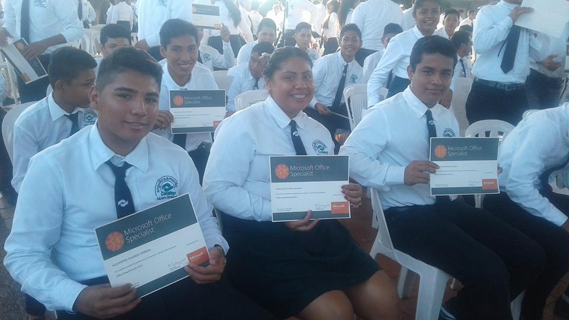
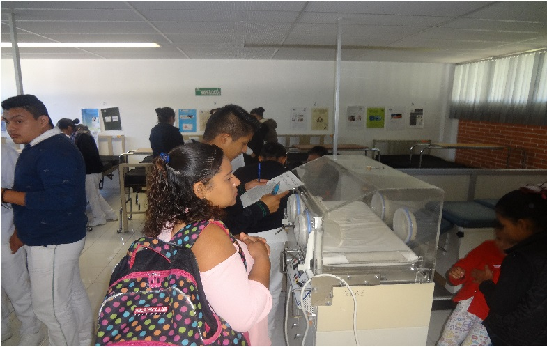

Nuestros Servicios


El Profesional técnico recibe una formación integral que le permite comprender el mundo e influir en él, seguir aprendiendo de forma autónoma a lo largo de su vida, desarrollar relaciones armónicas con quienes le rodean y participar eficazmente en su vida social, profesional y política a lo largo de la vida, así como desempeñarse en diferentes ambientes laborales, ejerciendo la toma de decisiones con una actitud crítica, creativa, ética y responsable.
Durante su formación, los alumnos tienen acceso a espacios mediados por tecnologías y orientados hacia la construcción del conocimiento como las Aulas Tipo, los Laboratorios de Autoaprendizaje y los espacios virtuales como la Red Académica y la Biblioteca Digital, en los que se pueden consultar materiales didácticos elaborados especialmente para apoyar el proceso de enseñanza-aprendizaje.
Los servicios que el plantel ofrece adicionales a la formación de Profesionales Técnicos Bachiller en las diversas carreras ofertadas son los siguientes:
Centro de Evaluación. El Plantel evalúa con fines de certificación en estándares de competencia. Además de evaluarnos para obtener la certificación en Microsoft Office Specialist.